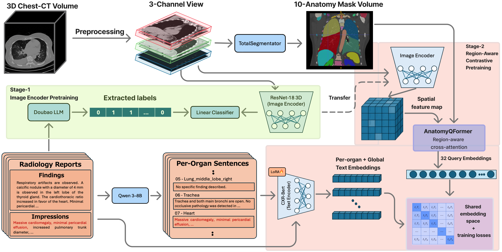
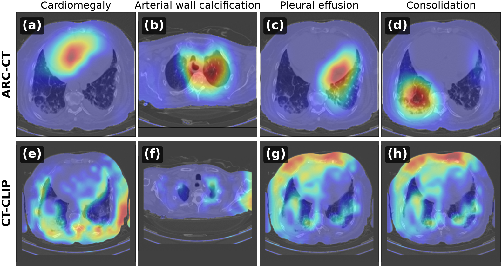

ARC-CT: Anatomy-Routed Contrastive Vision-Language Learning for 3D Chest CT
Middle East Technical University · Boston Children's Hospital, Harvard Medical School
Thoracic Image Analysis (TIA) Workshop at MICCAI 2026 — oral


Abstract
Contrastive vision-language learning uses paired chest CT volumes and radiology reports to learn abnormality classifiers without manually annotated labels. However, two characteristics of chest CT challenge conventional global contrastive learning. First, many critical abnormalities are small or anatomically localized, and pooling an entire volume into a single embedding may dilute their visual evidence. Second, the standard contrastive objective treats every other scan in a batch as a negative. Because many chest CTs share abnormalities, this objective incorrectly pushes co-positive pairs apart. We propose Anatomy-Routed Contrastive Learning for 3D Chest CT (ARC-CT), a region-aware framework that addresses these limitations using only labels extracted from reports by an LLM, with no manual annotations or bounding boxes. ARC-CT combines three components: (1) an AnatomyQFormer localizing evidence via queries constrained by automatically generated organ masks; (2) a label-Jaccard soft InfoNCE objective integrating the standard one-hot target with the label-set overlap of each pair, which reduces false-negative penalties between studies that share clinical findings; and (3) an organ-level alignment loss connecting mask-pooled visual features to organ-specific report text extracted offline with a large language model. ARC-CT achieves a 0.86 mask-free macro AUC across 18 abnormalities using a compact 3D ResNet-18 backbone. Overall, ARC-CT outperforms both comparable efficient baselines and several larger transformer models.
Results
Prompt-based abnormality classification with no manual labels (three-seed mean).
| AUC | Precision | Accuracy | F1 | |
|---|---|---|---|---|
| CT-RATE (in-domain, 18 abnormalities) | 0.855 | 0.455 | 0.787 | 0.809 |
| RAD-ChestCT (external, no fine-tuning) | 0.734 | 0.392 | 0.679 | 0.716 |
Per-class AUCs, the leave-one-out ablation and cross-modal retrieval results are in the paper; the exact command for every table is in REPRODUCE.md.
What is in the release
- Training code for both stages, evaluation on CT-RATE and RAD-ChestCT, retrieval and Grad-CAM scripts.
- Pretrained weights on Hugging Face (MIT licence).
- The text prompts used for zero-shot classification.
BibTeX
@inproceedings{isik2026arcct,
title = {ARC-CT: Anatomy-Routed Contrastive Vision-Language Learning for 3D Chest CT},
author = {Isik, Huseyin Umut and Ozaydin, Mehmet Alp and Kurugol, Sila and Ertekin, Seyda},
booktitle = {Thoracic Image Analysis (TIA) Workshop at MICCAI},
year = {2026},
eprint = {2608.28455},
archivePrefix = {arXiv}
}